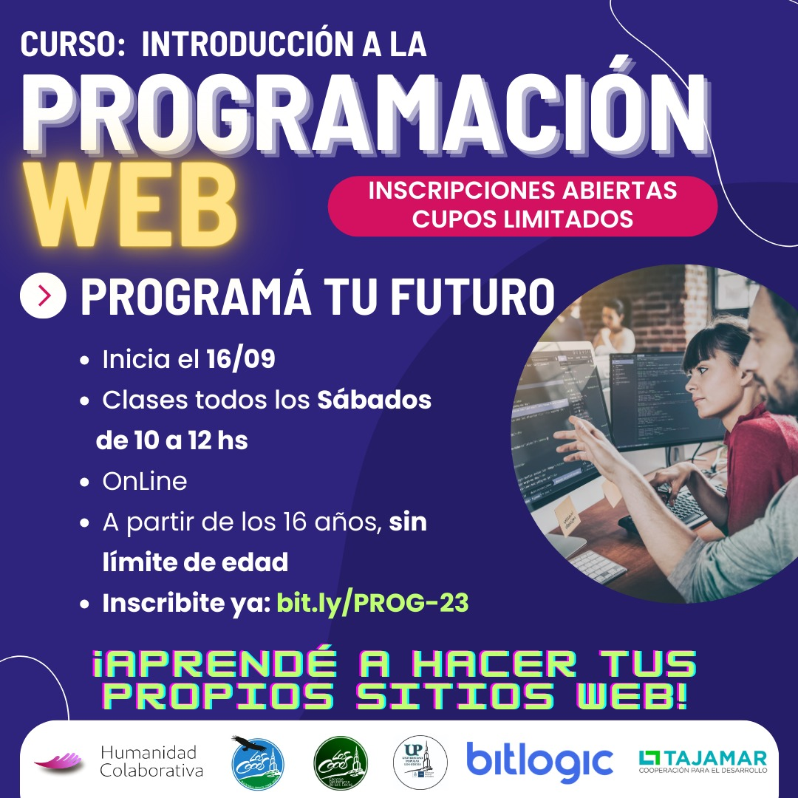

Bienvenidos al curso de Desarrollo Web
Los Cocos-Cordoba
En un mundo digital, globalizado, el desarrollo web es una herramienta clave para los que quieran transitar el mundo de la informática.
Este curso busca brindar al estudiante los pilares fundamentales del desarrollo web, proporcionando las herramientas básicas para
construir una página web desde cero y cubriendo un panorama general del extenso mundo de la programación web.
- Inicia:16/09/2023
- Termina:11/11/2023

- Que es el desarrollo WEB?
- El desarrollo web es un proceso complejo que implica la creación de productos digitales en línea. También es un término que define
la creación de sitios web para Internet o una intranet.
Objetivos
Objetivos generales
- Conocer los lenguajes fundacionales de los sitios web: HTML, CSS y JavaScript
- Aprender a desarrollar una página web desde cero utilizando lo aprendido en el curso
Objetivos especificos
- Conocer los conceptos básicos de HTML, CSS y JavaScript
- Configurar y utilizar un entorno de desarrollo adecuado
- Diseñar layouts responsive utilizando CSS Flexbox
- Introducirse en la Programación Orientada a Objetos
- Comprender qué es el Document Object Model y como manipularlo
- Explorar el concepto de frameworks y librerías
- Conocer la diferencia entre frontend y backend en el desarrollo web
- Aprender a crear un backend simple
- Familiarizarse con el uso de bases de datos
- Comprender qué es una Application Programming Interface y como se utiliza
- Familiarizarse con Git y GitHub para el control de versiones del código
- Aprender a desplegar una página web estática en plataformas como Surge y Netlify
- Comprender el proceso completo desde el desarrollo hasta la publicación de un sitio web
- Obtener los conocimientos necesarios para escribir código de manera autónoma
- Desarrollar una página web desde cero utilizando lo aprendido en el curso
Contenidos
| Semana 1 |
Semana 2 |
Semana 3 |
fin de la semana |
fin de la semana |
fin de la semana |
| Bienvenida y presentación del curso |
Introducción a CSS |
Introducción a JavaScript |
| ¿Qué es un lenguaje de programación? |
Selectores, propiedades y valores |
Variables, tipos y operadores |
| Presentación de HTML, CSS y JavaScript |
Modelo de caja (box model) |
Ciclos (loops) y condicionales |
| ¿Qué es un IDE? |
Estilado de texto |
Operaciones con arreglos |
| Configuración de nuestro entorno de desarrollo |
Diseño responsive con CSS Flexbox |
Clases |
| Etiquetas HTML semánticas y no semánticas |
|
Introducción a la POO con JavaScript |
Contenidos
| Semana 4 |
Semana 5 |
Semana 6 |
fin de la semana |
fin de la semana |
fin de la semana |
| Introducción al DOM |
¿Qué es un framework? |
Diferencias entre backend y frontend |
| Eventos e interacciones |
Diferencias entre framework y librería |
Introducción a HTTP |
| Validación de formularios |
Introducción a Bootstrap |
¿Qué es una API? |
| |
Diseño responsive con Bootstrap y sus componentes |
Conectándonos a una API pública |
| |
Introducción a Material Design |
|
Contenidos
| Semana 7 |
Semana 8 |
Semana 9 |
fin de la semana |
fin de la semana |
fin del curso |
| Introducción a Git y GitHub |
Espacio de consulta |
Repaso general de los conceptos claves vistos en el curso (presencial) |
| Desplegando una página web estática con Surge y Netlify |
Entrega del Proyecto Final y devolución |
Cierre (presencial) |
| Presentación del Proyecto Final: alcance, requisitos y objetivos |
|
|
Metodologia
Híbrida: Clases virtuales, con encuentros presenciales al inicio y final del proceso
- Cada clase de 2 horas contará con 4 espacios:
- Repaso de lo visto en la última clase.
- Un espacio teórico en el que se presentarán los conceptos fundamentales.
- Un espacio práctico en el que se presentarán ejemplos prácticos para que los estudiantes puedan seguir en sus computadoras.
- Resolución de consultas y puesta en común.
- Ejercicios y actividades asincrónicas para que los estudiantes implementen lo aprendido.
Sistema de evaluacion
Evaluación continua por medio de entregas de ejercicios y actividades prácticas.
Evaluación final integradora a través de la presentación de una página web desarrollada por el estudiante.
Docente:Lautaro Lobo-Technical leader
BITLOGIC